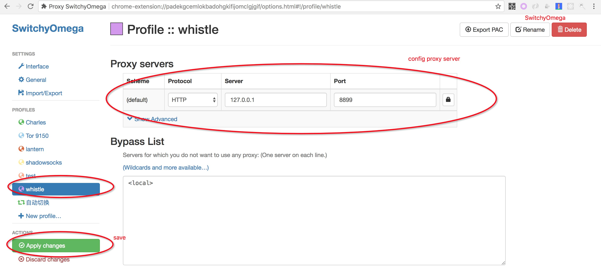
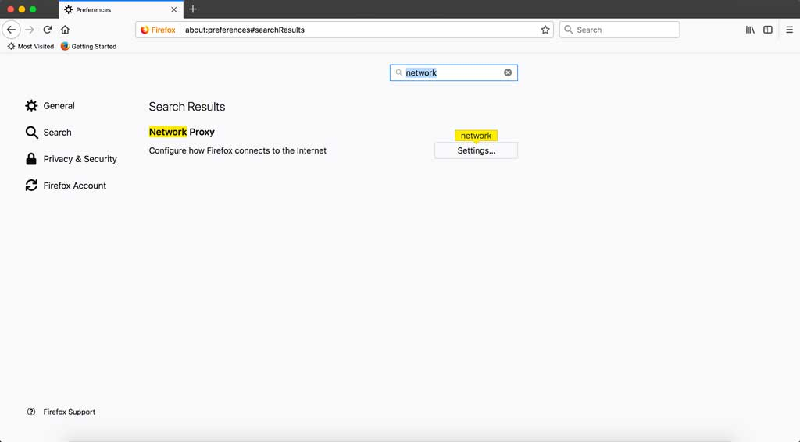
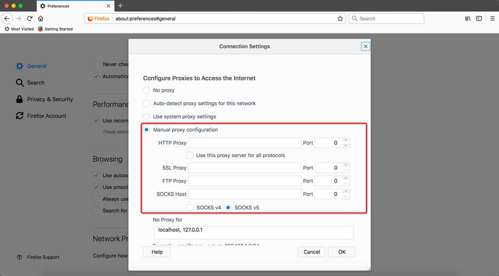

安装启动
安装启动whistle，需要以下四个步骤： 安装Node、安装whistle、启动whistle、配置代理。
1. 安装Node
whistle支持v0.10.0以上版本的Node，为获取更好的性能，推荐安装最新版本的Node。
如果你的系统已经安装了v0.10.0以上版本的Node，可以忽略此步骤，直接进入安装whistle的步骤，否则：
- Windows或Mac系统，访问https://nodejs.org/，安装LTS版本的Node，默认安装即可。
- Linux下推荐使用源码安装: 从Node官网下载最新版的Source Code(或者用
wget命令下载)，解压文件(tar -xzvf node-vx.y.z.tar.gz)后进入解压后的根目录(node-vx.y.z)，依次执行./configure、./make和./make install。
安装完Node后，执行下面命令，查看当前Node版本
$ node -v
v4.4.0
如果能正常输出Node的版本号，表示Node已安装成功(Windows系统可能需要重新打开cmd)。
2. 安装whistle
Node安装成功后，执行如下npm命令安装whistle （Mac或Linux的非root用户需要在命令行前面加sudo，如：sudo npm install -g whistle）
$ npm install -g whistle
npm默认镜像是在国外，有时候安装速度很慢或者出现安装不了的情况，如果无法安装或者安装很慢，可以使用taobao的镜像安装：
$ npm install cnpm -g --registry=https://registry.npm.taobao.org
$ cnpm install -g whistle
或者直接指定镜像安装：
$ npm install whistle -g --registry=https://registry.npm.taobao.org
whistle安装完成后，执行命令 whistle help 或 w2 help，查看whistle的帮助信息
$ w2 help
Usage: w2 <command> [options]
Commands:
run Start a front service
start Start a background service
stop Stop current background service
restart Restart current background service
help Display help information
Options:
-h, --help output usage information
-d, --debug debug mode
-l, --localUIHost [hostname] local ui host(local.whistlejs.com by default)
-n, --username [username] login username
-w, --password [password] login password
-S, --storage [newStorageDir] the new local storage directory
-C, --copy [storageDir] copy storageDir to newStorageDir
-p, --port [port] whistle port(8899 by default)
-m, --middlewares [script path or module name] express middlewares path(as: xx,yy/zz.js)
-u, --uipath [script path] web ui plugin path
-t, --timeout [ms] request timeout(36000 ms by default)
-s, --sockets [number] max sockets(12 by default)
-V, --version output the version number
-c, --command <command> command parameters ("node --harmony")
如果能正常输出whistle的帮助信息，表示whistle已安装成功。
3. 启动whistle
最新版本的whistle支持三种等价的命令
whistle、w2、wproxy
启动whistle:
$ w2 start
Note: 如果要防止其他人访问配置页面，可以在启动时加上登录用户名和密码 -n yourusername -w yourpassword。
重启whsitle:
$ w2 restart
停止whistle:
$ w2 stop
调试模式启动whistle(主要用于查看whistle的异常及插件开发):
$ w2 run
启动完whistle后，最后一步需要配置代理。
4. 配置代理
配置信息
- 代理服务器：127.0.0.1 (如果部署在远程服务器或虚拟机上，改成对应服务器或虚拟机的ip即可)
- 默认端口：8899 (如果端口被占用，可以在启动是通过
-p来指定新的端口，更多信息可以通过执行命令行w2 help(v0.7.0及以上版本也可以使用w2 help) 查看)
勾选上 对所有协议均使用相同的代理服务器
代理配置方式(把上面配置信息配置上即可)
全局代理：直接配置系统代理：
浏览器代理：安装浏览器代理插件 (推荐)
安装Chrome代理插件：推荐安装SwitchyOmega
Firefox: 地址栏输入访问
about:preferences，找到Network Proxy，选择手动代理配置(Manual proxy configuration)，输入代理服务器地址、端口，保存 
<<<<<<< HEAD
安装浏览器代理插件 (推荐)
安装Chrome代理插件： 推荐安装SwitchyOmega
安装Firefox代理插件： Proxy Selector
- 移动端需要在
设置中配置当前Wi-Fi的代理
PS: 如果配置完代理，手机无法访问，可能是whistle所在的电脑防火墙限制了远程访问whistle的端口，关闭防火墙或者设置白名单： http://jingyan.baidu.com/article/870c6fc317cae7b03ee4be48.html
访问配置页面
启动whistle及配置完代理后，用Chrome浏览器(由于css兼容性问题界面只支持Chrome浏览器)访问配置页面，如果能正常打开页面，whistle安装启动完毕，可以开始使用。
可以通过以下两种方式来访问配置页面：
- 方式1：域名访问 http://local.whistlejs.com/ =======
移动端需要在设置中配置当前Wi-Fi的代理，以 iOS 为例：
PS: 如果配置完代理，手机无法访问，可能是whistle所在的电脑防火墙限制了远程访问whistle的端口，关闭防火墙或者设置白名单：http://jingyan.baidu.com/article/870c6fc317cae7b03ee4be48.html
访问配置页面
启动whistle及配置完代理后，用Chrome浏览器(由于css兼容性问题界面只支持Chrome浏览器)访问配置页面，如果能正常打开页面，whistle安装启动完毕，可以开始使用。
可以通过以下两种方式来访问配置页面：
- 方式1：域名访问 http://local.whistlejs.com/
- 方式2：通过ip+端口来访问，形式如
http://whistleServerIP:whistlePort+1/e.g. http://127.0.0.1:8900
启动多个whistle
如果你想在同一台机器启动多个whistle，方便多个浏览器或者供多人使用，有两种方式：
- 切换到不同的系统用户，在每个系统用户启动一个whistle代理服务(每个服务的端口号可以用命令行参数
w2 start -p xxxx来指定) - 也可以通过切换规则目录和端口号的方式来解决(注意
S、C都是大写, newStorageDir为空表示使用当前配置)
w2 start -S newStorageDir -p newPort
# 系统默认目录的配置拷贝到新的目录
w2 start -S newStorageDir -C -p newPort
# 也可以指定要拷贝的目录
w2 start -S newStorageDir -C storageDir -p newPort
Note: 这种拷贝是覆盖式的，会替换目标目录里面原有文件，启动时设置了新的存储目录，关闭或重启时也要把目录参数带上(端口号不要带上)：w2 stop -S newStorageDir或w2 restart -S newStorageDir
比如分别在8899，8888，7788端口上开启3个实例：
# 默认端口8899，系统默认存储目录
w2 start
# 端口号为8888，存储目录为8888，并把系统默认目录的配置copy到8888目录
w2 start -S 8888 -C
# 端口号为7788，存储目录为7788，并把8888目录的配置copy到7788目录
w2 start -S 7788 -C 8888
Note: 不同实例要配置不同的代理